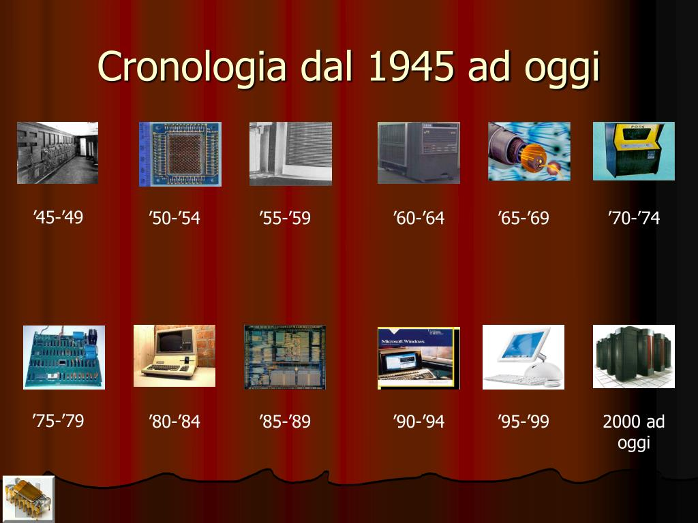

L'informatica è una scienza che si occupa di come elaboriamo, gestiamo e condividiamo le informazioni grazie a computer e altre tecnologie. È iniziata come una parte delle scienze matematiche e naturali, per capire i principi dietro ai sistemi informatici e migliorare i modi in cui trattiamo e gestiamo i dati in modo efficace e sicuro.
Questa disciplina si divide in vari settori, come la teoria dell'informazione, la programmazione, la progettazione di algoritmi, l'intelligenza artificiale, la sicurezza informatica e tutte le applicazioni tecnologiche in tanti campi (medicina, economia, scienze sociali, e così via).
L'informatica è uno dei principali motori del progresso tecnologico e scientifico nel mondo di oggi, avendo un impatto sempre più forte sulla nostra vita quotidiana, sull'economia e sullo sviluppo delle società moderne.
La storia dell'informatica è affascinante e affonda le radici in strumenti antichi come l’abaco. Ma se parliamo della sua evoluzione moderna, dobbiamo risalire al XIX secolo, quando Charles Babbage ha progettato la sua macchina analitica, un vero predecessore dei computer che conosciamo oggi.
Ada Lovelace, che capì il potenziale di questa macchina, scrisse il primo algoritmo mai destinato a essere eseguito da un computer. Poi, nel XX secolo, Alan Turing ha introdotto il concetto di macchina universale, che rimane alla base della computazione.
Nel 1941, Konrad Zuse costruì la Z3, il primo computer elettromeccanico, e nel 1945 nacque l'ENIAC, tra i primi computer elettronici. L'arrivo del transistor nel 1947 permise di rendere i computer più compatti, dando vita al computer a programma memorizzato con il Manchester Mark I. Negli anni '70 e '80, i computer personali come l’Altair 8800 e l’Apple II hanno cambiato tutto.
| Positivo | Negativo |
|---|---|
| Accesso alle informazioni: Con l'avvento di Internet e del World Wide Web, l'accesso a informazioni, conoscenze e risorse educative è diventato immediato e globale, abbattendo barriere geografiche e culturali. | Dipendenza dalla tecnologia: L'uso eccessivo della tecnologia può portare a una dipendenza, con conseguenti problemi di salute mentale, isolamento sociale e difficoltà nel mantenere un equilibrio tra vita personale e lavoro. |
| Innovazione in medicina: L'informatica ha rivoluzionato la medicina con l'introduzione di tecnologie come la telemedicina, l'intelligenza artificiale per diagnosi più precise, la gestione elettronica dei dati sanitari e la ricerca scientifica avanzata. | Disuguaglianza digitale: Non tutte le persone, soprattutto in aree meno sviluppate, hanno accesso alla stessa tecnologia e connessione internet. Questo crea un divario tra chi può sfruttare le opportunità offerte dall'informatica e chi ne è escluso. |
| Comunicazione globale: I computer, i social media e le piattaforme di messaggistica hanno reso possibile la comunicazione in tempo reale tra persone in tutto il mondo, facilitando sia la collaborazione internazionale che il contatto quotidiano tra individui. | Sovraccarico di informazioni: La quantità massiva di dati e informazioni disponibili online può portare a un sovraccarico cognitivo, difficoltà nel discernere tra contenuti affidabili e non, e confusione riguardo a ciò che è vero o falso. |
Il comportamento online, o netiquette, comprende le regole e le buone pratiche per comunicare e interagire in modo rispettoso, sicuro e responsabile sulla rete. Tra le regole principali troviamo: